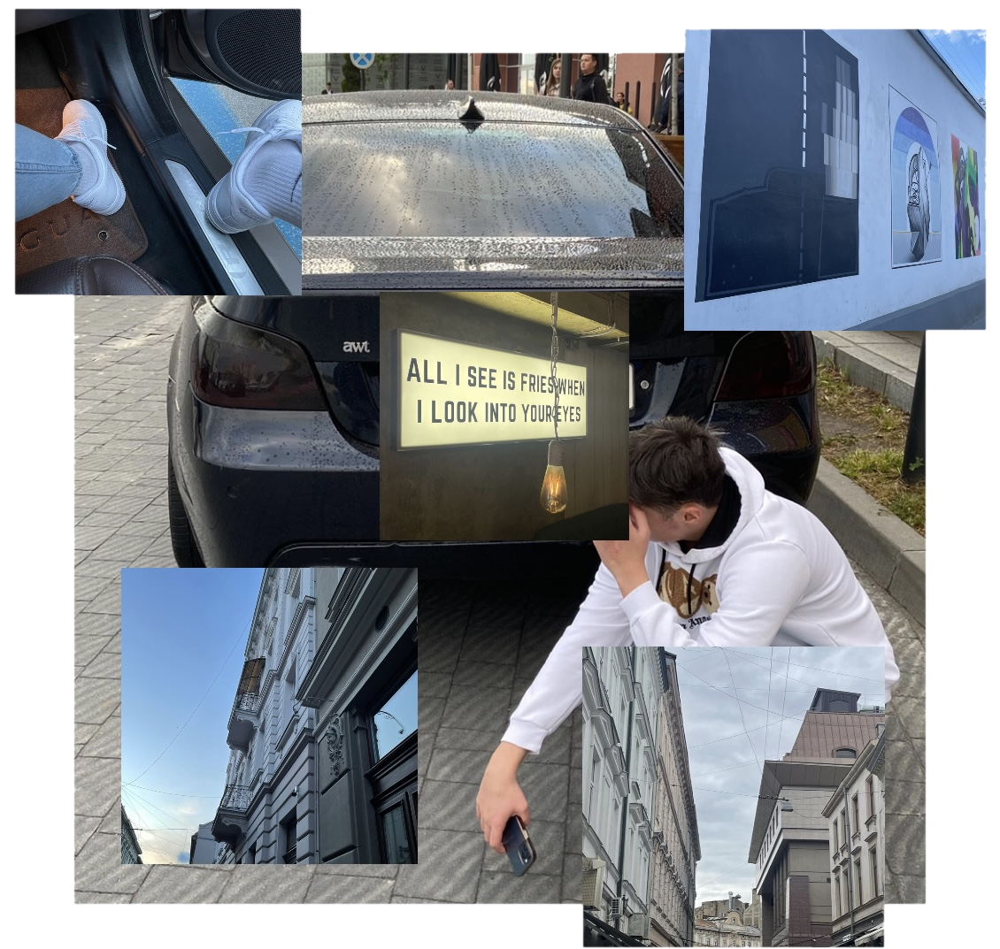
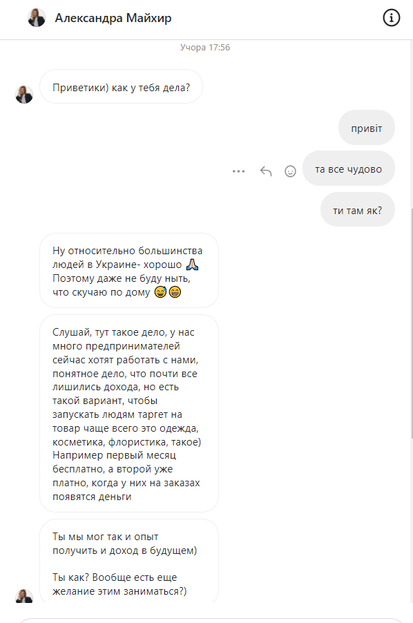
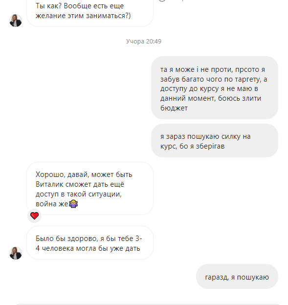
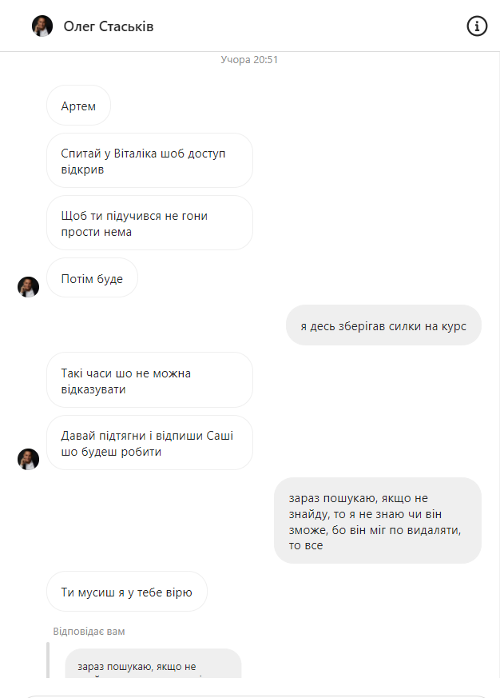
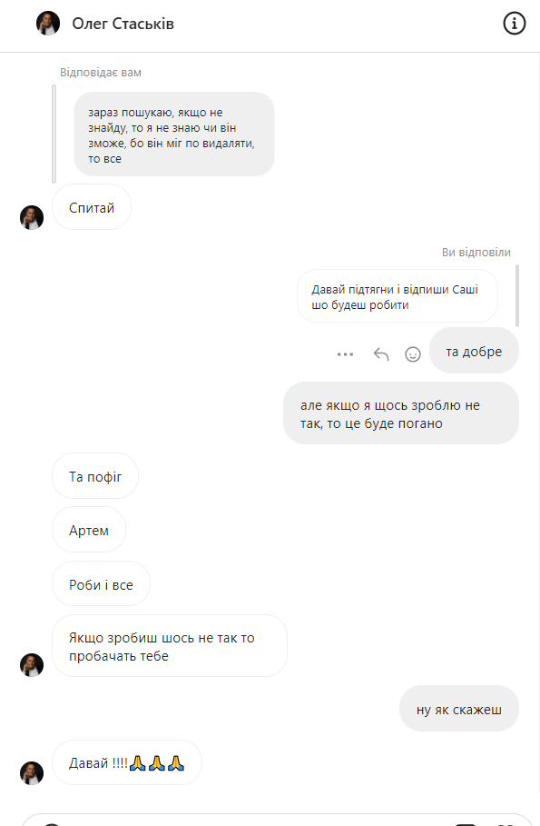

SHADOW LIFE!
Привет и это моя первая сапись на моем новом сайте про моя личную жизнь!
☟☟☟☟☟☟☟☟☟☟☟☟☟☟☟☟☟☟☟☟☟☟☟
Трішки випав з мого графіку, не писав ці два дві нічого, був зайнятий, не вистачало часу на рощповіді, але за ці 3 дні багато
чого змінилось та багато чого нового, отож розпочну напевно з самого почаку:
6 червня
Цього дня, я проснувся досить пізно, о 14:00, поснідав і пішов в Галицькі ветрибеньки, ресторан напроти мого будинку, в них на тереторії
дуже багато класних альтанок, і я собі там сидів, до 6 вечора, і дивився курс по CSS, дизнався дореіч багато чого нового, в цей самй час
як я там сидів в мене була пачку жувачок, я за ці дві години з'їв майже всю пачку, але коли я жував одну з жувачок, в мене відірвався
один брекет, нажаль, але в у середу я мав їхати до стоматолога тому я не сильно розчарувався,але трішки було не зручно з ходити без
одного брекета, ну і десь о 6 вечора я пішов додому, на той момент вже повернувся з роботи мій тато, і в кінці дня, я тіршки пограв
у
Волорант
, досить цікавий шутер, і пішов спати, мені цей день сподобався тому що, я вивчив дуже багато нового по CSS, хоча не встиг багато попрактикуватись
бо був вже змучений, але знання я отримав хороші, ну і наступний день в мене виглядва так:
7 червня
В цей день я не сильно щось робив, але теж продуктивний день, ну для мене, встав я не дуже пізно, але і не рано, ніби о 12 дня, як проснувся,
так зразу пішов їсти бо був голодний, поїв і вирішив трішки пограти в цей день, щось мені взагалі останнім часом ігри не подобаються,
і в кінці кінців мені стало жарко на другому поверсі і я вирішив піти на низ та почати практику в CSS і я ви можете помітити сайт став
набагато приємніше виглядати, такий дизай я робив приблизно 2 години, не довго, але прикольно, піся того як я зробив кращий дизайн
на сайті я пішов робити англійську, бо в вівторок маю репетирора, дуже хороша дівчина мене вчить англійську, Віта звати, вот ну і вчив
я ту англійську і якось вирішив зайти в інставграм, а там
Діма
гуляв з
Олегом
і мені дуже сподобалось як вдівся
Олег
в той день, ну і я вирішив щось схоже зробити і знаєте мені сподобалось те, як я вдягнувся, не робив фото, тому не покажу, ну або можете
перейти на мій приват в інсті, зараз прикріплю фотографії як він виглядає

Це мій приватний профіль в інстаграм, на цьому акуанті дуже відрісняється стиль
ніж на основі. Мені дуже подобається стильно цього акуанту, чому я не можу таке виставляти
на основу? Все просто на основві зовсім інший візуал профіля, а на новому профілі досить легко
пробувати новий візуал. Тому я і вирішив зробити новий акаунт, і на сам перед я його робив чисто для себе!
Ну тепер ви знаєте як виглядає мій приват, як на мене там дуже гарний візуал, ну і так гарно вдягнувшись я пішов на англійську, все
пройшло як завжди класно, ну і з хорошим настроем я пішов додому, в дома я готувався до останнього річного екзамену, а точніше до заліку
з англійської мови, готувався я 41 хвилину, не довго, там треба було повторити всю граматику, часи, пасив, і ще щось, але так як я не
ходив на уроки з англійської, під час дистанційного навчання, тому і не знав до чого конкретно треба було готуватись, ну і здумкою, що я
здам залік на 12 я пішов спати.
Наступний день був дуже насичений і ось як він виглядав
8 червня
Цього дня, я прокинувся рано о 9 ранку, бо в 10 залік, привів себе в порядок і налаштував все для того, щоб писати залік, на заліку
обов'язково потрібно було сидіти з включеною камерою, для того, щоб вчителька могла бачити хто списує і так далі, якщо немає камери,
то -1 бал від оцінки за залік, перше і друге завдання були легкі для мене, а друге та третє, я вже не був на 100% бути впевненим, що
там усе вірно написано, але за 15 хвилин до закінчення заліку мені скинули відповіді і я все списав, ну і десь за 2 години перевірили
мою роботу, оцінка була хороша 10, могло бути 11, але коли мені скинули відповіді, то мені довелось багато чого повиправляти, ну 10 і
на тому дякую, хахахах, о 3 дня я вже мав виходити з хати і їхати на пошту, замовив точно такі самі джинси як сині мої, тільки чорного
кольору, дуже клсно вони виглядають, після того ми з мамою поїхали віддати старий макбук в ремонт, щоб операційну систему поставили нову,
як ви памятає я пробував це зробити сам, але нічого не вийшло, вот здали ми його тому хлопцю, всього 250 грн взяв за це, і поїхали в
стоматологію, мені поставили брекети на нижні зуби, спочатку було дуже на зручно, але вже прошло 2 дня і ніби я трішки вже звик,
ну і після того поїхали в ресторан з мамою, на благодійний концерт-аукціон, спочатку взагалі мені не подобалось, бо я хотів додому,
+ мама прийшла зі своєю подругою і в неї є син і той син якийсь дурак чи гіперактивний, на вигляд років 10, ну вот його кожен раз коли
чув якусь музику починало тіліпати як дауна, це єдине, що мені там не сподобалось, а в цілому дуже співали артисти і дуже цікаво було
коли проводили аукціон картин, ніби усі кошти підуть на допомогу ЗСУ, як на мене це чудово, ну і в 9 вечора це все закінчилось і ми поїхали
додому, в центрі доречі зробив дуже багато класних фоток, доречі закинув їх на приват, дома я трохи сайт робив, а точніше дизайн, все-таки
дизай це - важко, і в мене була якась проболема з кодом, я вирішив написати
Ростику
, мій двоюрідний брат, ну і ми з ним дізнались дуже багато нових речей по CSS, особливо я, як можете помітити дизайн став набагато
приємніший, ми з ним сиділо до 4 ранку і потім ми заєбались ті проблеми вирішувати і пішли спати.
9 червня
Наступного дня, а точніше 9 червня я можна казати нічого не робив зовсім, прокинувся о 9 ранку на останій урок, це навіть не урок,
а просто позадавати якісь питання за класній керівничці, ну і найголовніше це те, що нас привітали з закінченням 8 класу, нарешті,
а потім я вирішив значить написати
Маркіяну,
і запропунував йому погуляти ввечері, я все таки вже не настільки гордий можу і сам хапросити погуляти, він погодився, ну вже минула
10 година вечора і він пише: 'Сорі братік, забув, що йду гуляти з Нікою', трохи поперептсувались і перенесли на завтра в 9 вечора вийти,
що я думаю на рахунок цієї ситуації? Та нічого не думаю, буває таке, що забуваєш щось, але свою думку я змінив наступного дня →
10 червня
Цього дня я прокинувся о 9 ранку і рівно через 10 хч заснув, прокинувся я о 2 дня через те, що мені подзвонила мама і сказала, що я маю
покосити газон на подвір'ї, а я забув про те, що говорив татові, що покошу газон в п'ятницю, ну, що я встав і пішов косити газон, треба
було як умога швидше його покосити, бо мав бути дощ через годину, траву я косив 2 години і я так змучився, що просто піздє, думав, що
получу сонячний удар, слава Богу усе обійшлось, ну і з 5 по 9 вечора я продовжував робити сайт, нарешті зміг розібратись з CSS ще краще
і зню тепер як поставити один елемент на другий, для дизайну якраз те, що мені треба було, поісля того я вирішив написати маркіяну чи він
вийде, бо ми домоглялись на 9 вечора, він відписав через 30 хвилин, що зараз підходить додому, переодінеться, перекусить і підемо гуляти,
я дуже хотів погуляти, бо хотів погуляти в своїх нових кросах, хахаха, ну і, що ви думаєте пішли ми гуляти?
НІ
, а все тому що почалась дуже сильна гроза і я вже нікуди не пішов, я був дуже розчарований, бо чекав
цей момент можна сказати 2 дня, щоб аіти погуляти, і я собі вот, що я собі думаю, можливо мені здається, але я думаю, що він просто не
хоче зі мною гуляти, бо він по-перше вже був дома коли мені писав, що зараз перекусить, переодінеться і вийде, і зтого часу прошло 56
хвилин і після того почався дощ, і він навіть після того нічого мені не написав, ну по типу перенести нашу прогулянку, він скоріш за все
спеціально тягнув час і не хотів йти гуляти, це моя така думка, можливо я не правильно бачу цю ситуацію, але в кожного своя точка зору,
ну і вирішив, що я вже не буду писати на наступний день йому, захоче погуляти сам напише, мені наприклад було би не зручно перед людиною
знаючи, бо ми домовились на 9 вечора і ця людина могла мати інші плани на цей вечір, а вийшло так, грубо кажучи, що я нічого не робив
цілий день через
Маркіяна.
І після цього вам напевно цікаво чи він мені написав на наступний день, а вот зараз і дізнаєтесь.
11 червня
Ранок цього дня в мене почався пізно, але як для літньої суботи, то впринципі як завжди, так от, прокинувся я о 2 дня і зразу пішов вчити
англійську, бо вам урок на 3 годину дня, коли вивчив, почав збиратись на англійську, як я виглядав в цей день ви можете глянути на мому
проваті, там нова фотка, англійська пройшла чудово, після уроки я одразу поїхав до стоматолога, бо вчора в мене стався один інцидент з
брекнтами, якщо коротко, то відійшла дуга на ніжніх брекетах, я мав прийти на 5 вечора, але прийшов на 15 хвилин раніше, 2 хвилини і мені
вже вирішили проблему з брекетами, далі ми поїхали з мамою в ТЦ
Victoria Gardens
їхали ми туди за сумкою найк, якщо завтра розберусу я зробити гарне відео, то закину на сайт, також хочу написати свій розклад на
усі дні тидня, відійшов від теми, так от, купили ми ту сумку і заодно вирішив я поїсти там, дуже хотів щось схоже як у МакДональдсі,
а вийшло так, що я замовив якусь не смачну хуйню, щей переївся, з затрашнього дня продовжую дієту свою.
Ну і довго очікувана історія про
Маркіяна,
так от, як видумаєте написав він мені сьогодні чи ні?)
Звісно, що ні.
Йому впринципі похєр на мене все, що я зрозумів, тепер най сам мені перший пише, кличе гуляти і так далі, бо я вже те заєбався йому писати
перший постійно і переживати за наші відносини, наша дружба всеодно вже не буде така як колись, я просто забуду всі обіди якісь, які в
мене назбирались за ці всі роки і просто відпущу цю людину, подивлюсь, що буде дальше, ну якось так, більше нічого цікавого за сьогодні не
сталось, тому я вже піду спати, до завтра!
Добраніч)) (02:58 | 12 червня |)
|| Досить хороший день! || (05.06)
Ранок сьогоднішньйого дня почався впринципі як завжди, мене розбудили і сказали, що ми спішимо, сьогодні ми мали їхати до бабусі
в гості, живе вона в
Стебнику, Львівська область
, взяли з собою Лілі та Злату, наші дві собаки, Злату ми часто беремо з собою кудись, а Лілі рідко, от сьогодні їй пощастило,
поки їду туди пишу код, бо немає, що робити, сьогодні розкажу більш детальніше про зміни в житті, друзів і так далі.
Вже приїхали до бабусі, перше приїхали у
Стрий
до іншої бабусі Таї, тут цьоця моя та дідусь, зараз сидимо у залі та говоримо просто, так давно не бачились є про, що поговороти.
Кароче треба розказати про трузів і так далі, все почалось з того моиенту як
Софія
почала зустрічатись з
Маркіяном
все ніби спочатку було добре до моменту поки я з
Маркіяном перестав спілкуватись, чому так, наскльки я зрозумів, це все тому що я не писав і не кликав гуляти,
сильна звісно причина, мені ніколи не подобалсь компанія
Маркіяна + остайній раз коли я гуляв з ними мені не дуже сподобалась поведінка
Курбана, це звісно все жарти, але він себе поводить просто як бидло, мені це не дуже подобається коли заради
поваги в компанії когось починають принижувати або обзивати, це дуже низько як на мене, тому я вирішив від них триматись подальше,
після чого
Маркіян вирішив образитись на мене за те, що я не кликав гуляти, а чекав поки мене покличуть, звісно це теж не дуже
правильно з мого боку також, але перевжно мене кликали гуляти, ну я звісно теж кликав гуляти просто рідше, ну в кінці з реально
хороших друзів в мене залишилась моя накраща подруга
Софія
дуже її люблю як подругу, вона мені постійно допомагає, особливо в поганий настрій, постійно підтримає і так далі, я дуже почав заганятись
через те, що у мене немає друзів, що я не гуляю, вле якось з часом мене попустило і все нормально, з часом
Софія
перестала зустрічатись з
Маркіяном
і я в нього спитався чи у них все закінчилось, повністю культурно та без матів, а він в свою чергу почав переходити на особисте
дуже не приямно мені було і я наговорив дуже багато зайвого йому на емоціях, і у кіненцевому результаті він забив мені стрЄлу,
мені було дуже смішно коли він це сказав мені, він старався говорити по крутому, але виглядало це ніби він просто тупий офнік,
через пару днів він дзвонить знову з погрозами, але в кінці він попустився і ми домовились спокійно поговорити, на наступний день
я собіку купив газовий балон, навсяк випадок, бо він неадекватний буває, поговорили ніби спокійно, помирились навіть, не давно
прогулялись з ним, я йому ще розказував за Болгарію, табір, в якому ми з ним були минулого року і він сказав, що може поїхати зі мною
і я сказав, якщо
Курбан
і
Макс
хочуть, то най їх бере з собою буде веселі, я просто поясню
Курбану
що, мені не приямно і так далі, думаю ми з ним ще помиримось хоча не сильгно хоча далі спілкуватись з ним, ну побачимо, і тут можна
подумати, що я гуляти почав більше, але це не так, мене Маркіян не кличе нікуди, тай він зайнятий часто, гуляю зараз з нормалим тіпом
Олегом
це мій колишній однокласник з яким ми дуже добре здружились з часом, вот він зараз поїхав у
Іспанію
на тиждень, скоромає приїхати, то підемо десь шлятись.
До речі, якось недавно я відповів на сторіс
Дімі
, хороший друг
Олега
, де він курить кальян, я поприколу сказав, що тоже хочу і він мені запропунував піти з ним 10-20 числа на калік, я погодився,
ніколи калік не курив до того, ще
Софії
запропунував з нами то вона піде і
Олег
теж захотів з нами, ну ще подивимось як там все вийде, але думаю все вийде, ну, а зараз я буду вже збиратись їхати до іншої бабусі,
тому продовжу як буду вже напевно дома, розкажу як там посиділи.
Кароче батьки там ще довго сиділи, а я пішов спати, бо був дуже сонний, тому що заснув о 5 ранку, ну поспав я там, не знаю скільки
часу, але трішки виспався, потім ми зібрались і поїхали додому, по проїзду я зразу пішов в свою кінмнату, я був дуже змучений, полежав
трішки і сів дивитись курс по JavaScript, це така мова програмування, дивився поки не зіткнувся з першою проблемою, ніяк не міг приєднати, js до html, так треба
було зробити по тому курсі, я вирішив написати
Ростику
, це мій двоюрідний брат, він вирішив мені подзвонити на Discord, ми вирішили цю проблему, треба було всього лиш скачати node js,
безпоняття, що це, але менф допомогло, потім ми почали говрити за цей курс, по JavaScript, прийшли до кіненцевої думки, що той курс
для потківця повна хєрня, тому мені
Ростик
порекомендував, таку хорошу програму під назвою, MIMO, ця програма допомагає у вивченні різних мов для програмування, і показав
просто ахуєнний сайт де можна брати готові заготовки для свого сайту в пару кліків, щоб не писати величезний код сайт bootstrap
дає просто пару рядків свого коду і ти вже маєш дужу круту готову кнопку, кнопку до прикладу написа, а так, то там є все, що мені
потрібно, я дуже заряжений мотивацією, тому завтра встану і почну вивчати дуже багато корисної інформації яка мені потрібна буде в
програмуванні, а сьогодні хочу лягти спати пораніше, бо дуже спати хочу.
Добраніч) (01.34 | 6 червня |)
|| Повернення || (04.06)
Давно мене тут не було, навіть не знаю як це все пояснити, але постраюсь, все по-порядку, тепер все записувати я буду виключно
на українській мові, і буду старатись записувати тут майже кожен день.
Насамперед треба почати зі змін в мому житі:
По-перше я дуже сильно звузив своє коло спілкування, прибрав лишніх людей, чи наоборот вони мене,
ну одном Словом в мене друзів стало менше, і через це я зараз дуже рідко гуляю, що не є дуже добре, про це буду більш детальніше
розповідати пініше.
По-другея досить сильно змінився в мишленні, це моя думка, мені не дуже подобається проводити час за
комп'ютером, ігри зараз взагалі ніякі не подобаються, дуже хочеться взятись за себе, заморозвитком зайнятись так скажем, дуже мені
подобається програмування по типу розробка сайтів, html, і так далі, в мене ще є курс по іншій мові програмування, JavaScript.
Також я дуже задумався на рахунок свого тіла та здоров'я, з понеділка доречі йду, нарешті, у спортзал, в данний момент стараюсь їсти
більш менш корисну їжу і мінімум солодого.
Що можу сказати про сьогоднішній день, розпочався він досить звичайно, я прокинувся о 14 годині дня, чому так пізно? Бо сидів до
пізна і переписувався зі всіма підряд, далі я поснідав, що дуже рідко буває зранку, зробив дз з англійської і пішов на додаткову з
англійської, усе пройшло як завжди чудово, коли повертався додому почався дуже сильний дощ, я був дуже мокрий, бо брама не закривалась
і я пробував її поремонтувати ще хвилин 5, після того зайшов в Discord до своїх знайомих і ми класно поговорили, просто погворили,
потім я як завжди ліг на ліжко і дивився тіток, раптово пройшла мама повз моєї кімнати і я спитався у неї, чи їй дуже потрібен її новий макбук
бо я дуже хотів новий мак, але не знав як це сказати батькам, бо зараз час не з найлегших і грошей зараз не багато у нас, і якось ми так
домовились з нею, що ми поміняємось макбуками, я просто мав вирішити деякі проблеми на свому старому маку, це була умова мами, я вже все
вирішив і щасливий чекав доки мама закінчить переносити свої файли з свого маку на флешку, але мені прийшла геніальна ідея стерти усі данні разом з
операційною системою, щоб у мами було більше місця + почистити повністю комп'ютер хотів від своїх файлів, все вже видалив, вирішив скачати
операційну систему і тут проблема з'явилась, треба було ввести свій AppleID, ну я вводжу і постійно вискакує якась помилка, я пробував
різні варіанти, читав навіть іноземні форуми, але це нічого не допомогло мені, мама вже принесла мені мак, і мені якось було так не приємно її
підставоляти, бо ми домовились, щоб робимо обмін макбуками, а вийшло так, що я зламав, можна сказати, мак свій і забрав у мами її,
курва, усе як завжди, але мама сказала, що завтра має прийти її знайомий, Орест, який шарить в тому, сподіваюсь, що він мені
допоможе, просто якщо мені прийдеться віддати його в ремонт, то цей мак потрібно буде віддати мамі назад, ще на деякий час, але
всеодно, якщо з тим старим маком щось станеться, то я віддам мамі її мак, ну якось так і вот на цю проболему з маком я потратив більше 3-х годин
свого часу, я так кажу ніби кудись спішу, ладно паралельно того як пишу зараз про свій день переписуюсь з
Настею
, найкраща подруга
Юсті
, до речі з
Юстинкою
посварився через мій невдалий жарт, як завжди, на сьогодні все напевно буду скоро спати йти, з Настею трішки
попереписуюсь і усе
Добраніч. (03:32 a.m. | 5 червня |)
|| Тяжкий день || (24.03)
11:49 - Утро следющего дня, проснулся я в 6:50 и вышел из дома в 7:30, решил я не сразу
к Ивану идти и ждать Марика, а пойти к нему и потом к Ивану. Я пришёл за ним напомнил эму
про скакал что её нужно захватить с собой, но он забыл про неё и мы занимались без скакалки.
Спорт зал у Ивана в подвале поэтому я был бы спокоен если бы началась воздушная тревога. По Поприходу
туда я не сказать что ожыдал что-то большего, но мне понравилось, хорошая тренировка получилась,
давно я не занимался, это конечно не Sport Life, но как вариант очень даже хорошый, беговая дорожка
тренажор на битцепс и трицепс, также на ноги есть очень даже хороште тренажоры.
После тренировки Иван предложил на чай с бутербродами, я был голоден по-этому я согласился,
после того как мы поели я и Маркиян собрались домой, когда мы виходили из дома к нам пришёл котик,
мы эго погладили я снял видос с ним с Мариком и подумал что будет гениально если я это выставлю в сторис.
Пришёл я домой и увидил Таню с Святославом и ушёл к себе в комнату, включил комп'ютер и зашёл
на физику, не слушал ничего + мне позвонила Софа Кручек и мы говорили где-то 30 минут, она мне как всегда гадала,
ахахахахах, потом её позвали и она кудато поехала. Я думаю ещё недолго посижу на уроках и пойду
катакть на самокате.
14:33 - Сейчас сижу на немецком и вспомнил что случилось вчера ещё мы когда сидели у магазина,
какая-то тьолка, подругому не скажу, оставила своего собаку, привязала до забора и ушла в магаз
Марик очень любит собак и решил погладить эго, значит эта девушка стояла и наблюдала за нами из-за угла
потому-что вход совсем с другой стороны, подбегает к Маркияну со словами:
-'Какого хуя ты трогаешь моего собаку?!'
Я соглашусь Марик тоже не долже был подходить к собаке, потому-что если бы эта собака укуксила эго
то виновата была бы эта двушка, но блять не подходить со словами 'Какого хуя...' и ладно если бы
она толко это сказала, но нет она начала крыть матом Марика, ну естествино он тоже начал крить её матами
она развернулась и ушла в магазин с собакой.
До немецкого я говорил с Софией и Максом, Максу я так понял она нравится, жаль, но у
него 0 шансов, кстати Софа научилась гадать, хахахахах. Потом я начал переписываться с Юстей
но написа что скучает и хочет что бы я приехал, мило, жаль, но я скорее всего не смогу приехать
ролители не пустят, возможно она приедет во Львов. Сейчас у меня последний урок, немецкий,
не люблю этот урок + я не делал дз по-этому я просто ливнул с урока и зайду в конце, что-бы
пропуск не поставила, потом возможно гулять пойду, но это мало вероятно.
2:19 - Да я всё таки вышел гулять, хорошо погуляли я на самокате катнул тоже нормально. Кароче гулял я с Иваном, Курбаном, Мариком и Максом, а ну ещё Славик был
но он ушёл домой почему - не знаю. Значит Иван дал Марику BMX, а Марик дал Ивану свой велосиипед, шины у Ивана были ещё спущены вчера поэтому мы решили поехать на
шиномонтаж у 'Сільської ради', накачали колёса и пехали кататься. И вот уже Маркиян едет домой, потому-что его позвали, и мы решили зайти в магаз и пойти на Галицькі,
сидели значит на скамейке Я, Макс и Курбан и они начали спорить кто больше подтягивается, мы быстро пришли на "Сонячний Край" и там начали играть лесенку, играли до 4 раз
потому-что Макс и Курбан больше не смогли + меня очнеь сильно болит плечо из-за того что я делал бар на самокате, не правильно делал эго и разошлись по домам.
Дома я сидел играл без тильта до одного прекрасного момента пока мне не написала Саша, девушка моэго брата, кстати Олег приежал домой к нам, хотел у меня взять
любой телефон, глайвное большой экран, говорит для мультиков, для кого я не спрашивал, но кажется для ребёнка, ну вот про что это я я уже открывал ворота как вижу Олег
приехал, а я очень радосный когда Олег приежает к нам, потому-что я с ним редко вижусь, и когда мы с ним здоровались, то он был или зол, или растроен, или ещё что-то другое,
но сам факт того что, мне так кажется, что он зол на меня и не хочет разговаривать со мной из-за того что я знаю теперь всю првду про эго бывшие отношение, он меня настраивал
против Тани, даже вышло, но потом мне Таня всё рассказала как оно есть на самомо деле, сначала я не верил ей, но на утро мама както подняла за это тему и это всё потдвердилось,
к чему это я, когда он уже уходил из дома, то он даже не попрощался со мной, тогда я почуствовал что что-то не так между нами, но мы это вдвоём умалчиваем, возвращаёмся к
теме, что мне написала Саша и почему я так растроился:


Мне не очень понравилось это предложение поэтому я сразу же начал искать отговорики, и да меня число 3-4 клиента не впячетлило, потому-что ине это совсем не интересно,
ну не нравится мне больше трагет и то я не достиг никаких высот из-за самого себя, ну это уже совсем другая ситация, как нибудь расскажу, и вот всё бы ничего если бы мне
не написал Олег сразу после того как я отписал Саше явно не, то, что хотела она услышать и вот что мне написал Олег:


После этого я очень сильно растроился так-как за меня всё постоянно выбирают, мне вообще кажется что Саше просто не хватает роботодателей и её нужно когото взять на
таргетолога, и когда я играл я был в ужасном настроении, грустная музыка и т.д., хотя в доте мы вийграли одну игру, потом пришёл Макс я с ним сыграл одну игру в напарники
мы выиграли, потом с Яриком в доте проебали и в кс в напарниках тоже, я сказал Ярику что бы он скачал фортнайт, думаю ему понравится, завтра увидим. Ну а сейчас я пойду
спать сразу же, но сначала попытаюсь найти сылки на курс от Виталика Лагодыча, треш. Обдумал всё таки я эту ситацию, может мне и не интересно, но это может быть мой
шанс поэтому я попробую, даже если солью бюджет похуй, но я попробую обещаю, в этот раз точно откосить не выйдет.
Спокойной ночи! 💘💘💘 (03:16 a.m. |25 марта|)
Не самый обычный день! (23.03)
12:07 - Сегодня, а точнеё уже вчера, провел день довольно хорошо. Проснулся с утра,
сложно было проснуться, но всё таки я успел на первый урок которого небыло, ну и слава
Богу. Вовремя уроков - играл в кс и кодил сайт, успел поговорить с Кабаном (Ростик Багрий),
спросил у него как фотку прикрепить на сайт, я забыл, уже давно я не кодил..., но потихоньку
вспоминаю всё. После того как прикрепил фотку, на сайт, пошёл гулять, мы с Мариком
договорились встретится с Аней,
но почему то мы не встретились, как говорит сам Марик.
- 'Мне нужно было сходить в Три Слона пофоткать диван, брат попросил...'
Ну ладно как нибудь в другой раз, я сказал эму, что сам напишу ей, потому-что он никогда
не может с ней договорится про совмествую встречу, просто погулять.
После этого вышел Иван, мы (Курбан, Макс, Я, Марик, Иван) решили просто посидеть в беседке
у ресторана Галицькі Ветрибекньки, потому-что родители Курбана не пускают его никуда
далеко от дома из-за состоявшейся ситуацией в нашей стране.
На часах уже 16:03 и Курбан ушёл домой помагать папе и с ним же пошёл Макс. Они думали это будет
не долго, но они больше не вышли. Потом мне очень сильно захотелось подыметь DRAG (вейп Ивана) и
я начал просить Ивана что-бы он пошёл за вейпом. Он очень долго ломался и не хотел идти под
предлогом, что еслм он пойдёт один то он больше не вийдет, я не хотел идти потому-что мне не
очень сильно хотелось идти туда в Nike Jordan 1 Retro, они просто не сильно удобные, но
повыёбыватся можно, ну и мы подумали и решили пойти в магаз за водой, а потом к Ивану за вейпом.
Попути к Ивану мы встретили Марка и Андрёя, они в двоём были на трюковых самокатах.
Забыл один важкный момент попути с магазина мы увидил с далека на площадке Аню и её
подругу, как говорит сам Марик Аня нормальная, а её подруга стрёмная, не знаю почему мы
не подошли, как нибудь в другой раз.
Мы решили поседеть с ними на Галицьких и попробывать сделать трюки какие небудь, я всё ещё
просил Ивана пойти за драгом он он не хотел. Одного момента мне сильно захотелось тоже
делать трюки на самокате и хотел переобуть кросы, а в тот момент Марик и Иван тоже ушли
переодется. Вот я уже дома поздоровался с Игорём и Олей - родители Тани, дома я поел, переобулся,
взял самокат и поехал на Галицьки, ждали Марика довольно долго, он приехал без Ивана, Иван
решил остатся дома. Мы играль GoS - Game of Scoot. Я выиграл, первый вилётел Марик, это и
не удевительно, он плохо катается, он сегодня какого-то хуя поставил вип и бар, харошь.
Часов тогда 6 может 7 было, вечера, мы всё ещё гуляли и тогда приехал Иван на BMX и ещё
он принёс вейп, мы начали эго курить, меня нормально так вставило конечно не то что ельф бра
но тоже сойдёт, в итоге мы решили поехать на Епицентр. Там мы всего лишь купили воду и колу
потому-что очень сильно хотели пить, хотя ехали туда покататся. Уже того было довольно
темно, но поговорили мы очень круто, покурили вейп, Марик договорился что купит iPhone XR 64GB Black
у Андрёя, было лишь одно условие что-бы телефон был роботчим, а Андрёя полётел экран на телефоне
и он как раз хотел продать эго за 4000 грн без ремонта экрана, Марика заебал его восьмой айфон,
хотя эму говорили что купят новый, но началась война и планы пошли по пизде, он значит договорился
за 6500 грн забёрет телефон с работчим экраном, Андрей сказал что поговорит с родителями и
скореё всего он продаст эму эго.
Мы уже хотели уходить но Марик сказал что-то про спорт зал и пробежку, а у Ивана в подвале
есть тренажорный зал, небольшой но он есть и мы решили что перед первым уроком, который у меня будет,
договорились на 7:30 утра быть у Ивана, где-то часик нормально позанимаемся, потому-что во
время войны спорт залы закрити, а я очень люблю спорт зал.
Поприходу домой я пошёл в душ и после этого пошёл играть в кс и доту. В кс я играл с
акаунта Дениса, мы выиграли игру на оверпасе, потом мы всё пошли играть в доту, Я, Максим, Ярик первую мы выиграли с Яриком в турбо.
Мы были без Макса потому-что он куато отошёл, мы выиграли игру, потом пришёл макс и мы сиграли Single Draft, Максу нужно
было сыграть последнию игру в Single Draft естествино мы выиграли, но меня тогда очень сильно всбесил Ярик,
он начал меня оскарблять с нихуя просто, конч, ну похуй. Третюю игру мы могли выиграть если бы я дальше
ломал трон, а я решил поиграться ещё с ними, но я не ожидал увидить ещё кроме разора остальных
троих типов, и в итоге меня убили Макса тоже и мы вот так проиграли игру, но всё равно мне
понравилась игра.
Как-то так прошёл мой день, завтра расскажу как прошла тренеровка и день в целом!
Спокойной ночи! (01:27 a.m. |24 марта|)
Привет меня зовут Артём и я живу в Украине город Львов!
Мне 14 лет и это моя история про мою жизнь. Сейчас время крайне сложное из-за войны между Россией и
Украиной, но я уверен мы справимся! Учусь я в ЛПГ в центре города, 9.6км от моего дома, именно
поэтому я должен вставать в 7 часов утра, а если рано утром нужно в спрот зал, то подём в 6.30 утра.
{kind=link}
{kind=link}
{kind=link}
{kind=link}